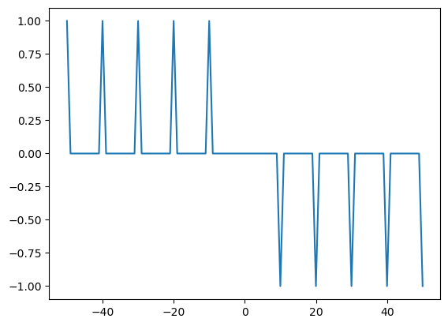
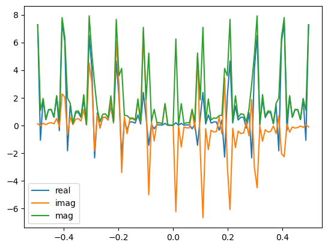
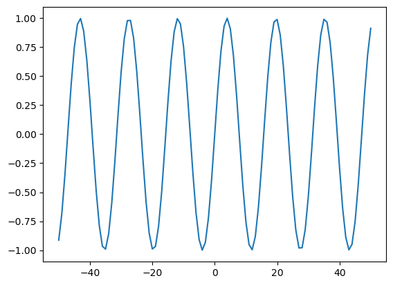
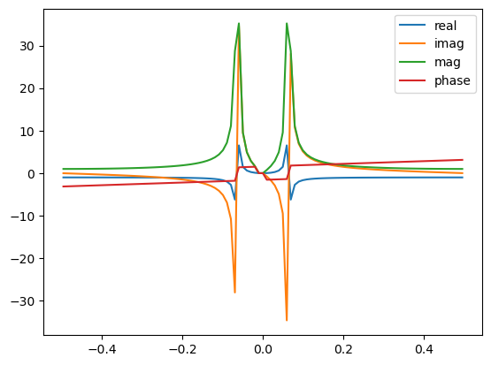

Chapter 2: Diffraction
Fourier Transform - A laboratory¶

part of
MSE672: Introduction to Transmission Electron Microscopy
Spring 2026 by Gerd Duscher
Microscopy Facilities Institute of Advanced Materials & Manufacturing Materials Science & Engineering The University of Tennessee, Knoxville
Background and methods to analysis and quantification of data acquired with transmission electron microscopes.
Load necessary packages¶
We only need matplotlib and numpy
[1]:
import numpy as np
import matplotlib.pyplot as plt
Periodic Delta Functions¶
[8]:
data =np.zeros(101)
for i in range(11):
data[i*10] = 1.
for i in range(6,11):
data[i*10] = -1.
print(data.sum())
data[50] = 0
# data = np.cos((np.arange(101)-50))
x = np.linspace(-50, 50, data.shape[0]) # mm
plt.figure()
plt.plot(x, data)
1.0
[8]:
[<matplotlib.lines.Line2D at 0x24d2a6cc550>]

[9]:
fft_of_data = np.fft.fftshift(np.fft.fft(data))
fft_of_data[49:51] = 0
fft_x = np.fft.fftshift(np.fft.fftfreq(len(data)))
plt.figure()
plt.plot(fft_x, fft_of_data.real, label='real')
plt.plot(fft_x, fft_of_data.imag, label='imag')
plt.plot(fft_x, np.abs(fft_of_data), label='mag')
#plt.plot(fft_x, np.angle(fft_of_data), label='phase')
plt.legend()
[9]:
<matplotlib.legend.Legend at 0x24d2a733610>

FFT of sine and cosine Functions¶
[4]:
data =np.zeros(101)
data = np.sin((np.arange(101)-50)*.4)
x = np.linspace(-50, 50, data.shape[0]) # mm
plt.figure()
plt.plot(x, data)
[4]:
[<matplotlib.lines.Line2D at 0x24d2a47f110>]

[5]:
fft_of_data = np.fft.fftshift(np.fft.fft(data))
fft_of_data[49:51] = 0
fft_x = np.fft.fftshift(np.fft.fftfreq(len(data)))
plt.figure()
plt.plot(fft_x, fft_of_data.real, label='real')
plt.plot(fft_x, fft_of_data.imag, label='imag')
plt.plot(fft_x, np.abs(fft_of_data), label='mag')
plt.plot(fft_x, np.angle(fft_of_data), label='phase')
plt.legend()
[5]:
<matplotlib.legend.Legend at 0x24d2a4f6210>

Conclusion¶
The Fourier Transform gives the frequencies of sine waves to reproduce the original data
The fast fourier functions of numpy are used throughout the course.